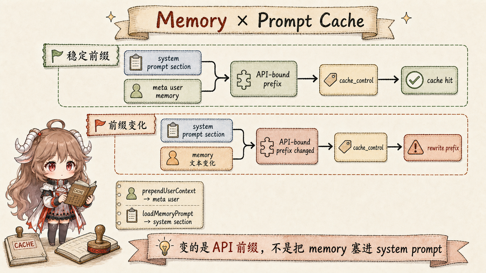

先把容易混的几句话拆开。你在终端里看到的聊天滚动历史叫会话过程；写在磁盘里的 transcript 是证据记录；
CLAUDE.md、auto memory、agent memory 这类长期材料才更接近 Claude Code 说的 memory。
它们都可能影响下一轮模型，但影响方式不一样：有的进入每轮 user context，有的先进入 memory prompt 或后台账本，
有的只属于某个 agent 的 system prompt。
本篇先给结论：Memory 不是聊天记录的别名，而是 runtime 在请求前可投影的一组长期账本。 它能影响 prompt cache，因为一旦进入 model-visible request prefix，文本变化就可能改变缓存前缀；但 memory “动态”不等于每轮必变，也不等于所有记忆都会直接塞进 system prompt。
阅读契约：这篇追踪一个代表性规则“这个项目测试必须跑 pnpm test”：
它可以被人写进 CLAUDE.md，也可能被 auto memory 记录，或被某个 agent 作为 scoped memory 使用；
源码怎样发现它、缓存它、投影到对应 prompt 入口、什么时候后台更新、哪里会影响 prompt cache。
读完应该能回答：Memory 存在哪里，谁能写，哪一轮模型能看见，和 transcript、context、prompt cache 分别是什么关系。
证据边界先摆出来。产品层说法参考 Claude Code memory 文档、 Anthropic prompt caching 文档； 源码层说法来自 Rememorio/claude-code 公开镜像。 公开镜像不是 Anthropic 官方源码仓库，所以本文只把可见客户端代码写成事实；feature gate、服务端缓存和模型内部行为只按可见请求形状做边界化推断。 文末也放了一篇小林 Coding 的参考阅读，但正文不会把外部讲法当成源码证据。
一、先从一条项目规则开始
假设你在一个仓库里反复告诉 Claude Code：“这个项目不要跑 npm test，要跑 pnpm test。”
如果每次都靠聊天历史撑着，这条规则很脆弱：一旦 compact、resume、开新会话，旧消息不一定还在模型视野里。
所以更稳的做法，是把它变成长期材料。
Claude Code 最朴素的长期材料是 CLAUDE.md。官方文档把它说成项目约定、常用命令和偏好的存放处；
源码里的
claudemd.ts 文件头注释
则把加载顺序写得更细：managed memory、user memory、project memory、local memory。它还支持
@include，会从当前目录一路向上找 CLAUDE.md、.claude/CLAUDE.md
和 .claude/rules/*.md。
representative rule
raw sentence:
"这个项目测试必须跑 pnpm test"
possible stores:
CLAUDE.md -> team-visible project rule
CLAUDE.local.md -> private local rule
auto memory file -> learned note for future turns
agent memory -> scoped to one agent's future work
later projection:
CLAUDE.md / rules -> user context -> model-visible request
auto MEMORY.md -> user context or relevant-memory attachments
auto policy text -> memory prompt section
agent memory -> selected agent system prompt1.1 CLAUDE.md 是人写的长期规则
源码的
getMemoryFiles()
会先处理 managed / user 级别，再从当前工作目录向上收集 project / local 级别。这里有两个重要信号：
第一，memory 文件不是“上一轮聊天”；它是文件系统里的指令材料。第二，越靠近当前目录的规则优先级越高，
这让 monorepo 子目录可以覆盖上层约定。
所以 CLAUDE.md 适合放“如果模型不知道就容易做错”的东西：测试命令、代码生成禁区、
PR 约定、危险目录、团队口径。它不适合做流水账。流水账应该在 transcript；源码事实应该让模型重新读文件；
memory 只保存那些以后会反复影响决策的规则。
1.2 auto memory 是后台学到的长期经验
新一些的源码还多了 auto memory。isAutoMemoryEnabled()
表明它默认开启，但会被 CLAUDE_CODE_DISABLE_AUTO_MEMORY、--bare、远程持久化条件和设置项关掉。
存储路径由
getAutoMemPath()
解析，默认落到当前项目对应的 memory 目录。
这条线不是每轮前台都硬写。extractMemories.ts
的文件头说明，它在完整 query loop 结束、模型给出最终响应且没有继续工具调用时运行，用 forked agent
从当前 session transcript 抽取 durable memories。源码还特意让这个 fork 共享父会话 prompt cache，
并在
createAutoMemCanUseTool()
里限制工具：读可以宽，写只能写 memory 目录，shell 只能读。
1.3 session memory 和 auto dream 是支线，不是当前回合主线
还有一条容易误读的路径叫 session memory。SessionMemory
的注释说得很清楚：它自动维护当前对话的 markdown notes，用 forked subagent 在后台周期性抽取关键信息，
不打断主对话。触发上也不是“想到就写”，shouldExtractMemory()
同时看 token 阈值、工具调用数量和最后一轮是否还有工具调用。
再往后，autoDream
是周期性整理：时间门槛、session 数量门槛和锁都满足时，才用 forked agent 回看多段会话并整理 memory。
这说明 Claude Code 的“学习”更像后台整理档案，而不是主线程回答时临时把每句话都写进一个神秘黑盒。
1.4 三类 memory 不是同一个 prompt 入口
到这里要收一次边界。封面图是概念库存：它把长期材料放在一张桌面上，方便看清 owner；
但源码执行时并不会把所有 memory 都合流到同一个入口。真正会直接走
getUserContext()、再被 prependUserContext() 包成 meta user message 的，不只是
CLAUDE.md、.claude/rules 这类 claudemd 规则；auto memory 的 MEMORY.md
entrypoint 也会在 feature 允许时被
getMemoryFiles()
收进去，另一些模式则会用 relevant-memory attachments 替代 index 注入。auto memory 的
loadMemoryPrompt()
主要提供写入和检索规则这一段 system prompt 动态 section；agent memory 的
loadAgentMemoryPrompt()
则只拼进被选中 agent 的 prompt。
| 长期材料 | 源码入口 | 读法 |
|---|---|---|
CLAUDE.md / .claude/rules |
getMemoryFiles() -> getUserContext() -> prependUserContext() |
每轮 user context 路径，进入 API-bound messages 前部。 |
auto memory / MEMORY.md |
getMemoryFiles()、loadMemoryPrompt()、后台 extract / dream |
内容 entrypoint 可进 user context 或 attachment；写入/检索规则进 memory prompt section。 |
| agent memory | loadAgentMemoryPrompt() |
只进入对应 agent 的 prompt，不是父会话的 user context。 |
二、Memory 怎样进入下一轮请求
现在来看你最关心的那句话：“它是不是包到 system reminder 里，然后塞到 system prompt？”
如果这里的“它”指 CLAUDE.md / rules 这条 user context 路径，方向接近，但源码边界不严谨。
它确实被包进 <system-reminder>；但在可见源码里，这不是追加到
systemPrompt 字符串，而是被构造成一个 meta user message，prepend 到 messages 前面。
getUserContext()
会调用 getMemoryFiles()，把过滤后的 CLAUDE.md / rules 文件整理成
claudeMd，再加上当前日期。随后 query()
在调用模型前，把 messagesForQuery 交给
prependUserContext()。
后者生成的内容长这样：
shape-level request before API call
systemPrompt:
default system prompt + system context
messages:
meta user:
<system-reminder>
# claudeMd
...CLAUDE.md content...
# currentDate
Today's date is ...
</system-reminder>
...projected conversation messages...2.1 进入 model-visible view，不等于变成 transcript
这条 meta user message 会进入本轮 API-bound messages，所以模型可以看见它。但这不等于它是用户真实输入的一句话， 也不等于 transcript 里的每条旧消息都会原样变成 memory。这里讨论的是 claudemd user context 路径； auto memory 和 agent memory 另有 prompt 入口。transcript 是会话证据，二者在下一篇上下文管理里会继续分账。
这个边界能解释 compact 后为什么 CLAUDE.md 还会回来：compact 改写的是旧 conversation view；
memory 文件仍在文件系统里。compact 后只要重新加载 user context，项目规则就会重新投影进下一轮。
这不是 summary “完美保存了记忆”，而是 runtime 重新读了一份长期规则。
2.2 cache 不是被“memory 动态”自动打爆
现在回到 prompt cache。Anthropic prompt caching 文档讲的是 provider 复用请求前缀。源码里
addCacheBreakpoints()
会给 messages 放 cache marker，而且注释强调每个请求只有一个 message-level cache_control。
因此只要 memory 被 prepend 到 messages 前面，它就属于“可能影响前缀形状”的材料。

但这不是说 memory 一开，cache 就废了。源码里 getUserContext() 被 memoize，
getMemoryFiles() 也有 cache；clearMemoryFileCaches()
和 reset path 只有在设置、compact、文件重载等场景才清。换句话说，稳定轮次里 memory 文本不变，
provider 看到的前缀仍然可能稳定；memory 文件变了，或者 auto memory 写入后进入之后的请求，
那才是可能打断旧前缀的点。
更精确的说法是：Memory 会参与 prompt cache 的前缀纪律。它不是 system prompt 的隐藏魔法， 也不是每轮随机变化的黑盒；它是一段被 runtime 注入到 API-bound messages 前面的用户上下文。 当这段上下文或 memory prompt section 稳定，cache 有机会复用；当它们在 API-bound 前缀里变化， 前缀就可能需要重写。
三、为什么不把所有东西都写进 Memory
如果 memory 能跨轮次影响模型，那是不是所有读过的文件、踩过的坑、跑过的命令都应该写进去？源码给出的答案其实很克制。 auto memory fork 写入有权限边界；session memory 有阈值；auto dream 有时间、session 数量和锁。它们都在避免一件事： 把临时证据误升级成长期规则。
| 内容 | 适合放哪里 | 为什么 |
|---|---|---|
| 团队约定、测试命令、禁区 | CLAUDE.md / .claude/rules |
这是未来每次都可能影响决策的长期规则。 |
| 本机偏好、私人路径、个人习惯 | CLAUDE.local.md 或 user memory |
需要跨会话，但不该提交给团队。 |
| 本轮调查证据、命令输出、diff 细节 | transcript / runtime history | 它们是证据，不一定应该长期影响未来任务。 |
| 反复出现的用户偏好或工作方式 | auto memory / agent memory | 适合被整理成长期经验，但要经过抽取、去重和后续重载。 |
这也是为什么 Memory 章应该放在上下文管理之前。Memory 先回答“长期材料从哪里来、谁能写、什么时候可见”； 下一篇再回答“这些材料和聊天历史、工具结果、compact summary 一起进入请求时，runtime 怎样减压”。 到最后的 Prompt Cache 章，我们再把这条线收回来：稳定前缀不是天生的，是这些 owner 边界共同维护出来的。
四、把误读压成四条规则
- Memory 不是 transcript。transcript 记录发生过什么；memory 保存以后还会反复影响决策的规则和经验。
<system-reminder>不是 system prompt。源码里它由prependUserContext()生成，是 meta user message。- 动态 memory 不等于每轮变。只有当被投影进 API view 的 memory 文本或请求形状变化时，才可能影响旧缓存前缀。
- 后台学习不是当前回答的魔法。extract memories、session memory、auto dream 都是有触发门槛、权限边界和存储位置的 side path。
所以我们可以用一句话收束：Claude Code 的 Memory 是“长期账本 + 轮次投影”，不是“更长的聊天记录”。 一旦接受这个模型，后面的上下文管理就顺了：compact 处理旧 view，transcript 保留证据，memory 重新加载规则， prompt cache 则奖励那些在 API view 里保持稳定的前缀。
参考源码与资料
- Claude Code memory 文档
- Anthropic prompt caching 文档
src/utils/claudemd.tssrc/memdir/memdir.tssrc/context.tssrc/utils/api.tssrc/tools/AgentTool/agentMemory.tssrc/services/extractMemories/extractMemories.tssrc/services/SessionMemory/sessionMemory.tssrc/services/autoDream/autoDream.ts- 小林 Coding：Claude Code Memory 参考阅读